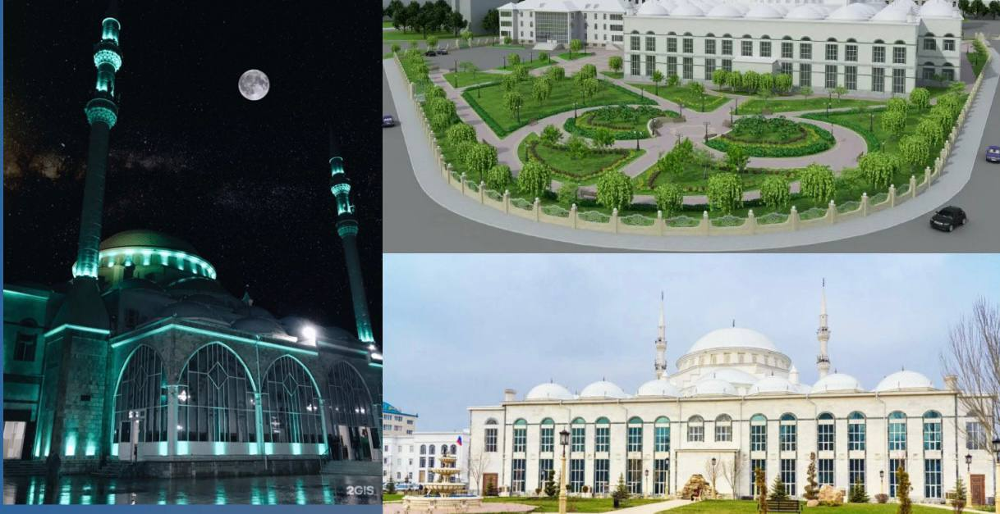

Белая мечеть в Махачкале не зря называется именно так, ведь для её строительства использовались материалы исключительно белоснежного цвета.
Это одна из множества причин, по которой здание выглядит настолько величественным, но при этом невесомым и воздушным.
Образцом для подражания была выбрана стамбульская мечеть, создатели изменили только цвет здания.
И всё же проект выполнен не под копирку - у объекта имеется собственный шарм и самобытность.
Центральная Джума мечеть построена в 1997-м, но позже её пришлось значительно расширить.
Фотографии
Центральная Джума-мечеть – это одно из крупнейших мусульманских святилищ в России, расположенное в городе Махачкала, столице Дагестана.
Мечеть была построена в XIX веке и имеет значительную историческую и религиозную ценность.
При посещении мечети посетители должны соблюдать определенные правила: снять обувь перед входом, одеть скромную одежду,
женщинам рекомендуется закрыть волосы платком. Внутри мечети посетителей встречает великолепное убранство,
ковровое покрытие и декоративные элементы.
Центральная Джума-мечеть служит местом для проведения молитв, религиозных обрядов и культурных мероприятий.
Вокруг мечети расположены многочисленные магазины, кафе и другие заведения, где можно приобрести сувениры
и поучаствовать в культурной жизни города.

История создания
История Джума мечети начинается с 1991 года, когда одна обеспеченная турецкая семья решила вложить личные средства
в постройку этой религиозной памятки.
Однако с того момента прошло долгих шесть лет до открытия мечети.
Это неудивительно, ведь утверждение проекта и строительство требует немало времени.
Стоит отметить, что вначале мечеть была намного меньше и не могла вместить более восьми тысяч молящихся.
В результате многие прихожане располагались на площади рядом со зданием, что было крайне неудобно
(вместить всех желающих не было никакой возможности). Тогда горожане сами приняли принципиальное решение - они начали активно
собирать средства для реконструкции и расширения главного святилища Махачкалы.
В 2007 году деньги были собраны с помощью телевизионного марафона (около 25 млн российских рублей),
после чего началась основательная реконструкция строения. На данный момент вместимость Джума мечети составляет 15 000 прихожан.
Это среднее количество, но в особых случаях допустимо посещение 17 тысяч человек.
Ввиду своих значительных размеров, мечеть видна издали.
Примечательно, что расширение никаким образом не сказалось на гармоничности здания и оно не утратило своего архитектурного шарма.
Азан в Махачкале Джума-мечеть
Когда добраться до мечети
Адрес главной мечети Махачкалы: улица Дахадаева, дом 136. Ближайшая остановка общественного транспорта: «Центральная Джума Мечеть».
Джума мечеть находится в 2 км от центра Махачкалы и ее даже ночью невозможно не заметить, поскольку здание отлично подсвечено.
Хотя Джума мечеть в Махачкале построил турок, но он настолько точно отобразил душу свободного народа, что здание сразу полюбилось жителям города.
Посетить Дагестан и, в частности, Махачкалу обязательно стоит - это прекрасный гостеприимный край. Фото Джума мечети, размещенные в нашей статье, также мотивируют поближе познакомиться с архитектурой города. Словом, добро пожаловать в восхитительный Дагестан!
Дагестан. Джума мечеть в Махачкале на карте.
Координаты: 42.968938, 47.493085